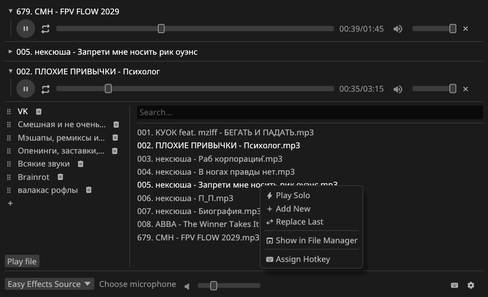

A simple, modern, and powerful soundboard for Linux, written in Rust. Route audio effects directly to your virtual microphone for Discord, Zoom, or TeamSpeak with ease.

PWSP leverages modern PipeWire features to achieve flawless, low-latency audio routing.
Seamlessly mixes your physical microphone input with soundboard effects by managing PipeWire virtual devices automatically. Your voice and sounds combine perfectly.
Plays a wide variety of audio file types out of the box, including mp3, wav, ogg, flac, mp4, aac, and more.
Bind custom key shortcuts to play sounds instantly from anywhere, even while full-screen gaming or when the application is minimized.
Organize sounds with drag-and-drop folders, quick search filtering, and collapsible tracks to keep collections clean.
Control individual volume levels, scrub tracks to specific playback positions, and trigger multiple sounds concurrently.
Automatically detects new audio input devices and dynamic disconnections, linking virtual devices on the fly without restarts.
PWSP is split into distinct components to guarantee high stability, performance, and easy scripting.
Background service. Manages PipeWire links, loads audio files, and handles routing.
Lightweight graphical user interface built with Rust and egui.
Command-line interface for scripts, integrations, and custom hotkeys.
pwsp-cli tool, you can easily script sound playback or set up global hotkeys through your window manager (e.g., i3, Sway, Hyprland).
Choose the preferred installation method for your Linux distribution.
Recommended installation method. The easiest of the universal installation options.
# Add the PWSP Flatpak repository
flatpak remote-add --user --if-not-exists pwsp-repo https://arabianq.github.io/pipewire-soundpad/index.flatpakrepo
# Install the stable version
flatpak install --user arabianq-repo ru.arabianq.pwsp//stable
# Enable and start the daemon (critical for audio routing)
systemctl --user enable --now pwsp-daemonAvailable in the Arch User Repository (AUR). You can build it from source or download the pre-compiled binary package.
# Install via an AUR helper like paru (or yay)
paru -S pwsp
# Or install the pre-compiled binary package (faster)
paru -S pwsp-bin
# Enable and start the background daemon
systemctl --user enable --now pwsp-daemonAvailable for Fedora users via a custom Copr repository.
# Enable the PWSP Copr repository
sudo dnf copr enable arabianq/pwsp
# Install the package
sudo dnf install pwsp
# Enable and start the background daemon
systemctl --user enable --now pwsp-daemonDownload the pre-built .deb package for Ubuntu, Debian, or Linux Mint from the downloads section below.
# Install the downloaded .deb file
sudo apt install ./pwsp_*.deb
# Enable and start the background daemon
systemctl --user enable --now pwsp-daemonCompile the application directly from source using the Rust toolchain.
# Clone the repository
git clone https://github.com/arabianq/pipewire-soundpad.git
cd pipewire-soundpad
# Build the release binaries
cargo build --release
# Run the background audio engine
cargo run --release --bin pwsp-daemon &
# Start the graphical user interface
cargo run --release --bin pwsp-guiGet pre-compiled binaries and source files directly from the latest GitHub release.